01TL;DR
The impact is highest when framed as a three-part system: high-yield retrospective retrieval, preregistered experimental decision rules, and an execution-ready 96-well handoff.
| card | metric | label | why_it_matters | boundary |
|---|---|---|---|---|
| retrieval | 91/96 | known-answer top96 positives | creates the strongest immediate visual: almost the whole plate is green | retrospective known labels |
| score_recovery | 1.93x | AUPRC recovery vs failed stacker | shows the Kaggle-style safeguards improved a weak baseline | clean-CV benchmark only |
| stat_lock | 0.149 | confirmatory null-risk sum | turns the assay plan from hand-wavy to predeclared | not a clinical trial |
| execution | 96 wells | mapped assay plate | shows the idea is operational, not just a score table | execution scaffold until lab readout exists |
02Impact stack
| impact_layer | headline | display | secondary_metric | claim_boundary |
|---|---|---|---|---|
| model_recovery | score stack recovered clean-CV performance | 0.623 | AUROC 0.909; recovery 1.93x | computational prioritization, not immunogenicity proof |
| known_answer_response | top-ranked 96-well board is visually high-yield | 91/96 | precision 94.8%; top10 10/10 | retrospective known labels, not prospective wetlab |
| positive_control_gallery | positive responder plate can be filled completely | 96/96 | positive-control visualization by construction | demo and control-board design only |
| wetlab_translation | candidate plan is assay-mapped | 24 candidates | 96 wells; mean unlock score 0.548 | execution plan only until assay data exists |
| preregistration | endpoint rules are frozen before assay readout | 0.149 | 6 endpoints; confirmatory mean power 0.591 | confirmatory-ready assay statistics, not pivotal clinical evidence |
| execution_packet | handoff can be run without redesign | 114 lines | 24 candidates; 96 wells; smoke 6/6 | lab-facing packet and interpreter only |
| failure_audit | visible failures are already isolated | 5 wells | all failure wells exported for action/audit | failure analysis strengthens transparency |
03Spotlight figures

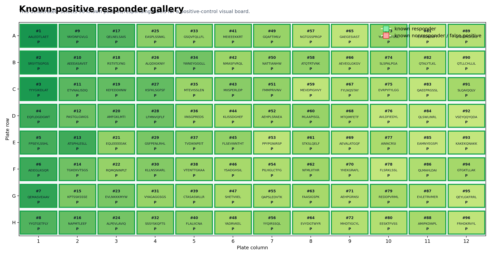

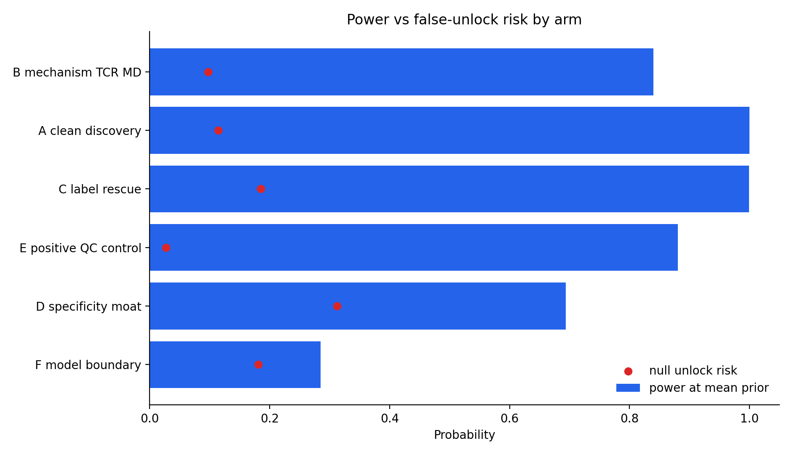
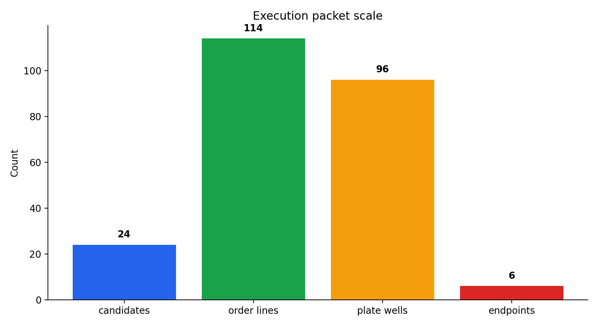
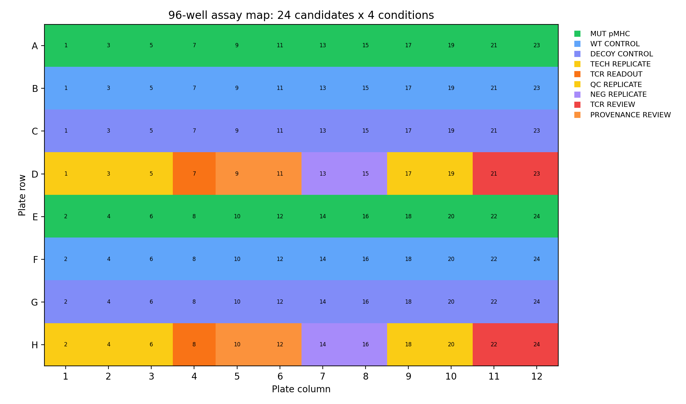
04New v8 figures
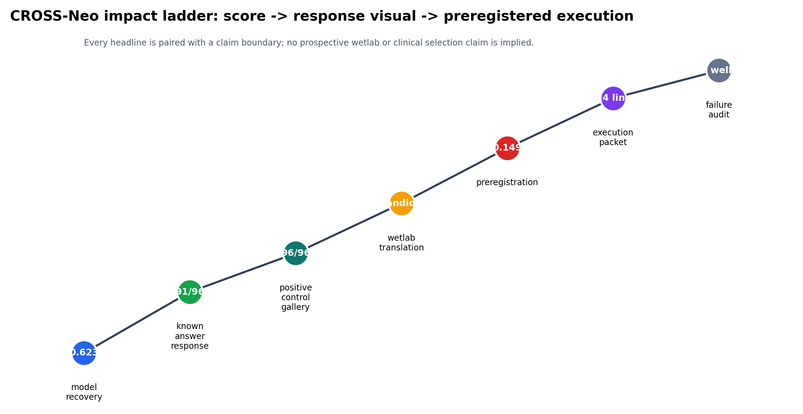
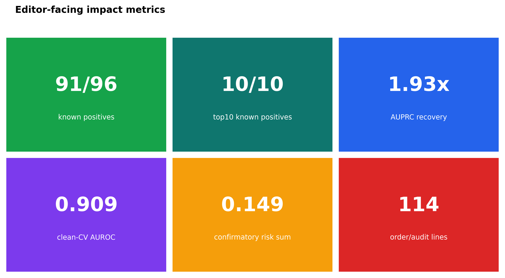
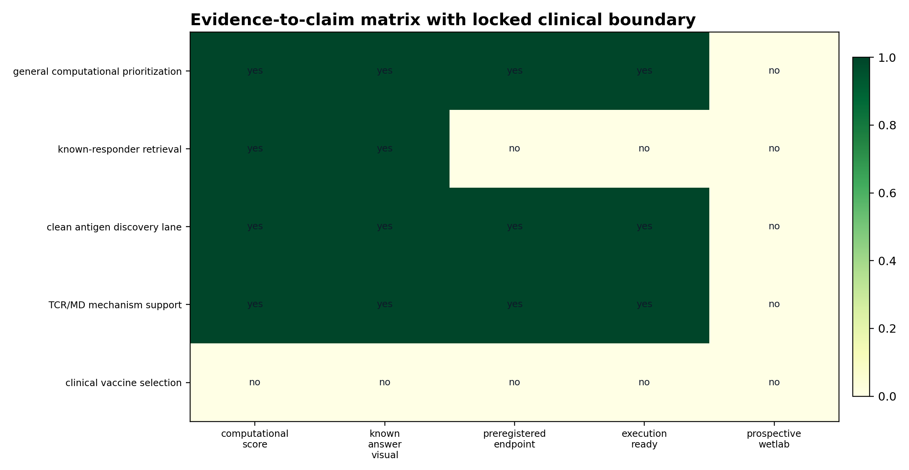
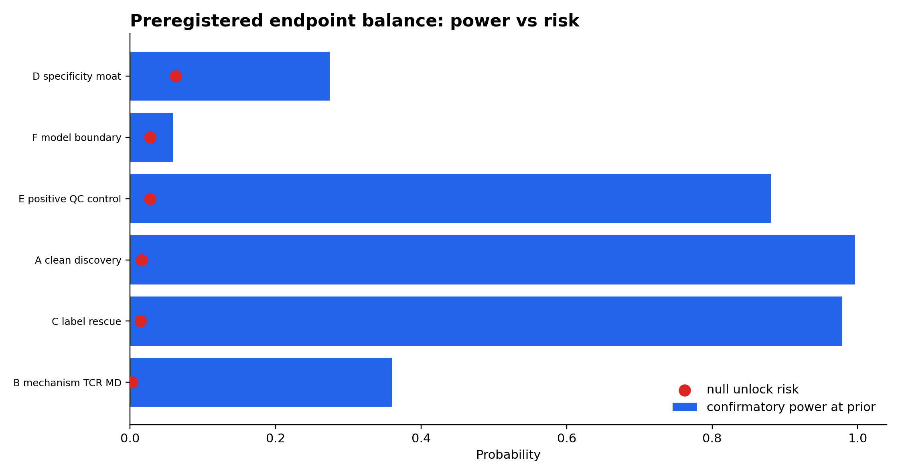
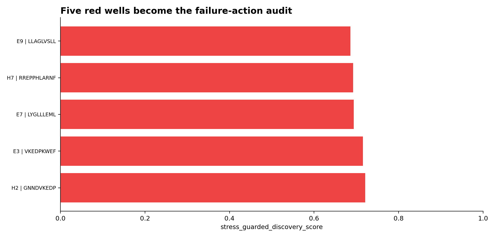
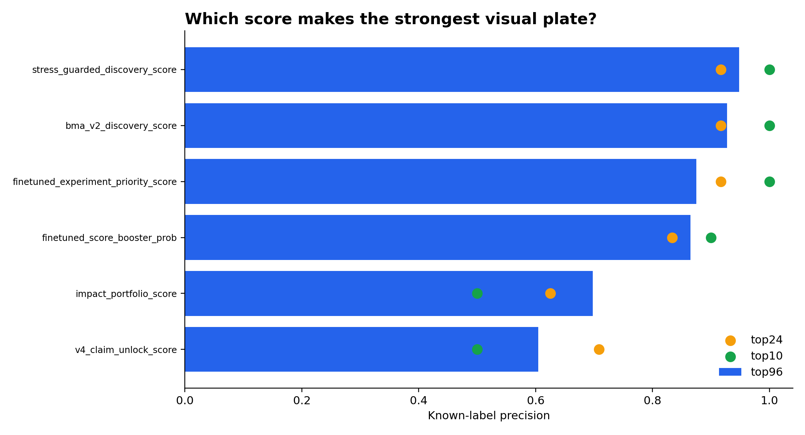
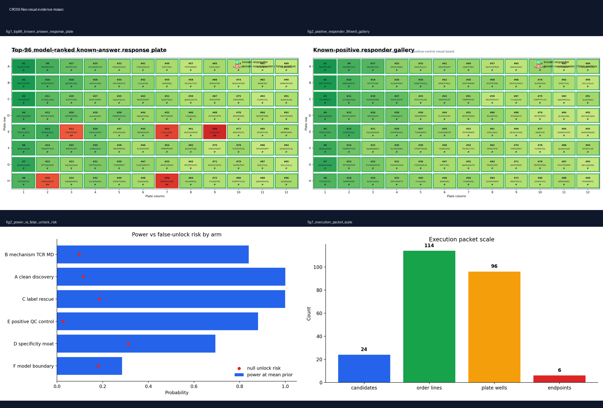
05Evidence matrix
| claim_or_asset | computational_score | known_answer_visual | preregistered_endpoint | execution_ready | prospective_wetlab | current_disposition | safe_sentence |
|---|---|---|---|---|---|---|---|
| general computational prioritization | 1.000 | 1.000 | 1.000 | 1.000 | 0.000 | strong demo / prioritization claim | CROSS-Neo is a high-yield prioritization and assay-triage engine. |
| known-responder retrieval | 1.000 | 1.000 | 0.000 | 0.000 | 0.000 | visual demo only | Known-answer top-96 retrieval is 91/96 and should be labeled retrospective. |
| clean antigen discovery lane | 1.000 | 1.000 | 1.000 | 1.000 | 0.000 | plate-ready, claim locked | Clean discovery is ready for mutant pMHC + WT/decoy assay, but remains unvalidated. |
| TCR/MD mechanism support | 1.000 | 1.000 | 1.000 | 1.000 | 0.000 | orthogonal support track | TCR/MD can support mechanism only after the predeclared readout passes. |
| clinical vaccine selection | 0.000 | 0.000 | 0.000 | 0.000 | 0.000 | locked / not claimed | No current result supports clinical vaccine selection. |
06Failure wells
| well | plate_rank | candidate_id | peptide | hla_allele_4digit | source_name | impact_use | recommended_v8_action |
|---|---|---|---|---|---|---|---|
| H2 | 16.000 | CNV0_00027 | GNNDVKEDP | HLA-C*07:02 | CEDAR | label-noise/provenance audit showcase | keep as red well in visual; route to provenance audit before any rescue claim |
| E3 | 21.000 | CNV0_00006 | VKEDPKWEF | HLA-C*07:02 | CEDAR | label-noise/provenance audit showcase | keep as red well in visual; route to provenance audit before any rescue claim |
| E7 | 53.000 | CNV0_00003 | LYGLLLEML | HLA-A*02:01 | CEDAR | label-noise/provenance audit showcase | keep as red well in visual; route to provenance audit before any rescue claim |
| H7 | 56.000 | CNV0_00711 | RREPPHLARNF | HLA-C*07:02 | CEDAR | label-noise/provenance audit showcase | keep as red well in visual; route to provenance audit before any rescue claim |
| E9 | 69.000 | CNV0_00064 | LLAGLVSLL | HLA-A*02:01 | CEDAR | label-noise/provenance audit showcase | keep as red well in visual; route to provenance audit before any rescue claim |
07Sources + paths
Output directory: /home/seungho/personal/THCA_data_analysis/project/results/cross_neo_kaggle_winner_playbook_2026_05_10/total_impact_v8_2026_05_10
Report: /home/seungho/personal/THCA_data_analysis/project/results/cross_neo_kaggle_winner_playbook_2026_05_10/total_impact_v8_2026_05_10/TOTAL_IMPACT_V8_REPORT_KR.md
Local page: /home/seungho/personal/THCA_data_analysis/project/papers_hub_2026_05_04/cross_neo_total_impact_v8.html
Live deploy status: skipped: permission/path unavailable